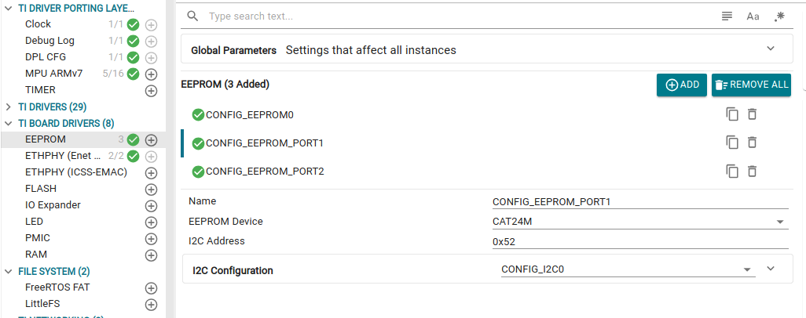
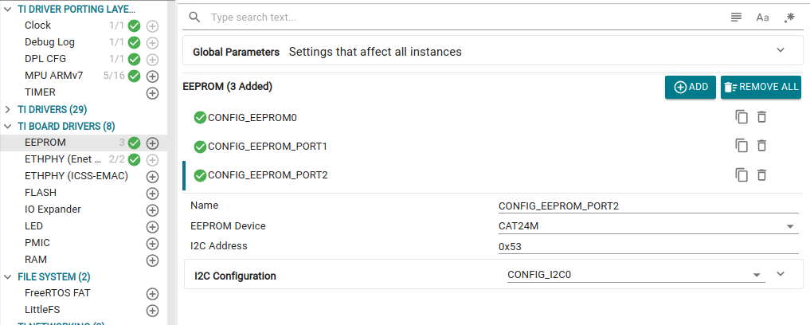
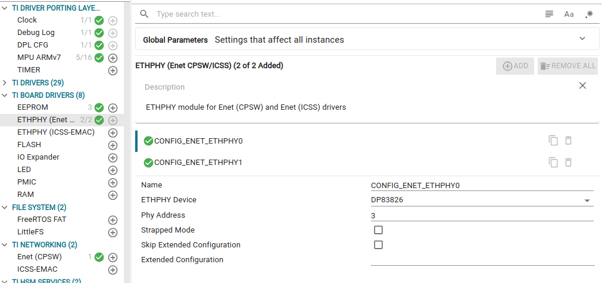
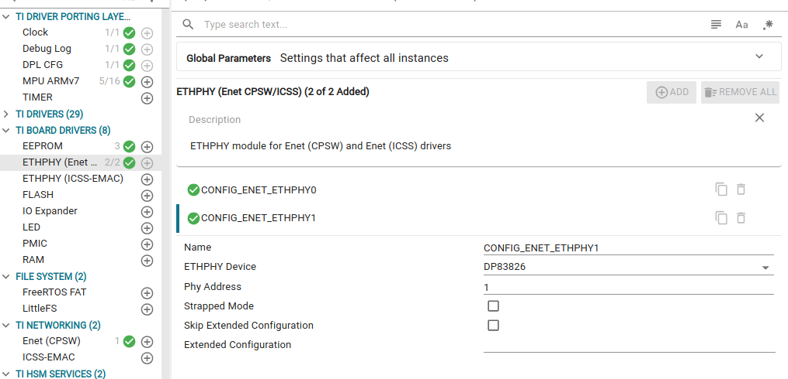
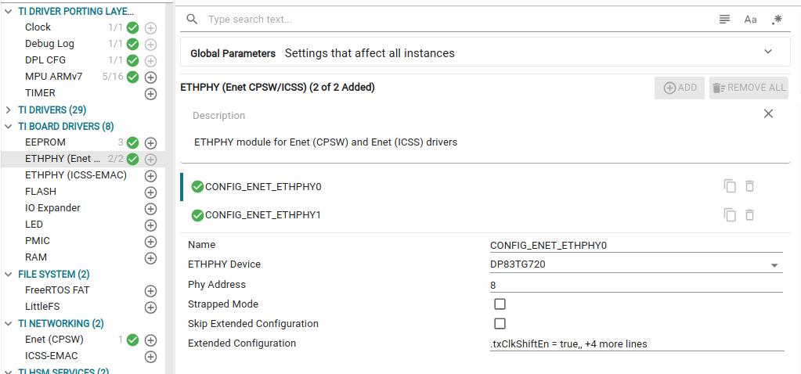
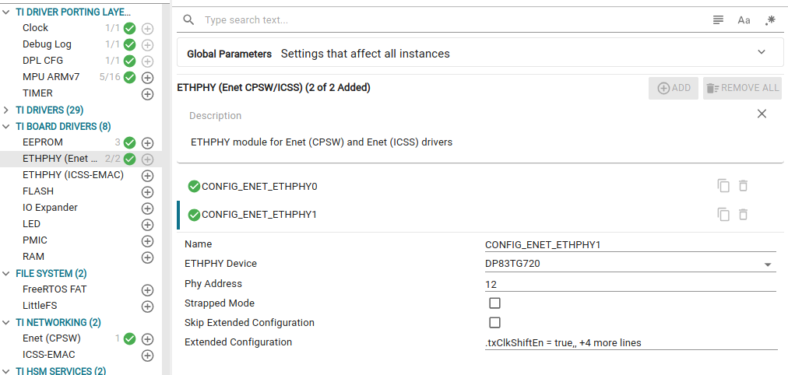

|
AM261x MCU+ SDK
11.02.00
|
|
|
AM261x MCU+ SDK
11.02.00
|
|
Out-of-box networking (CPSW) examples seamlessly support the Rev-A LP-AM261 board version. Modify the following changes in CPSW example Syscfg-GUI to use Rev-E1 and Rev-E2 board
1. Add two EEPROM instances in 'Syscfg‑Gui → TI BOARD DRIVERS → EEPROM'
1.1. If 'Mac Port 1' is used, create an EEPROM instance named CONFIG_EEPROM_PORT1 with I²C address 0x52.
1.2. If 'Mac Port 2' is used, create an EEPROM instance named CONFIG_EEPROM_PORT2 with I²C address 0x53.


2. Update the 'Syscfg‑Gui → TI BOARD DRIVERS → ETHPHY' instances for add‑on PHY usage
2.1. If 'DP83826-EVM-AM2' add-on PHY is used
2.1.1. Set 'ETHPHY Device' in CONFIG_ENET_ETHPHY0 to DP83826 and 'Phy Address' to 3.
2.1.2. Set 'ETHPHY Device' in CONFIG_ENET_ETHPHY1 to DP83826 and 'Phy Address' to 1.
2.1.3. Map CONFIG_ENET_ETHPHY0 to 'MacPort 1' and CONFIG_ENET_ETHPHY1 to 'MacPort 2'.
2.1.4. Configure either 'MII/RMII' interface in 'CPSW pinmux config'.


2.2. If 'DP83TG720-EVM-AM2' PHY
2.2.1. Set 'ETHPHY Device' in CONFIG_ENET_ETHPHY0 to DP83TG720 and 'Phy Address' to 8.
2.2.2. Set 'ETHPHY Device' in CONFIG_ENET_ETHPHY1 to DP83TG720 and 'Phy Address' to 12.
2.2.3. Map CONFIG_ENET_ETHPHY0 to 'MacPort 1' and CONFIG_ENET_ETHPHY1 to 'MacPort 2'.
2.2.4. Set 'Link Speed Capability' and 'Link Duplexity Capability' to ENET_SPEED_1GBIT and ENET_DUPLEX_FULL for both MAC ports in 'MAC Port Config'.
2.2.5. Configure 'RGMII' interface in 'CPSW pinmux config'.


 1.8.20
1.8.20